The Five Worst Leaders in History
 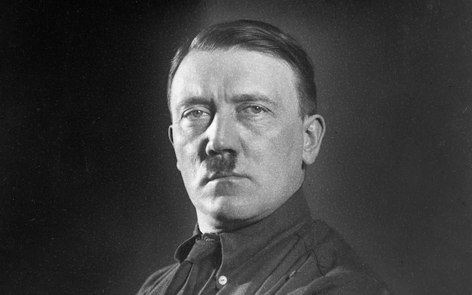
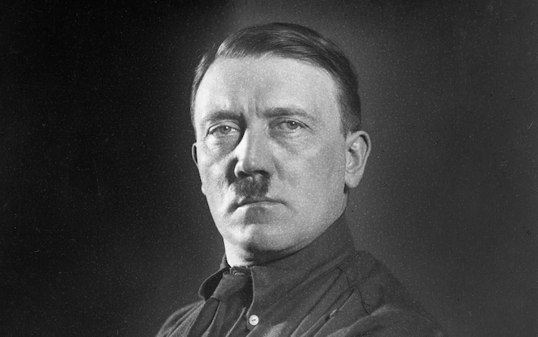
 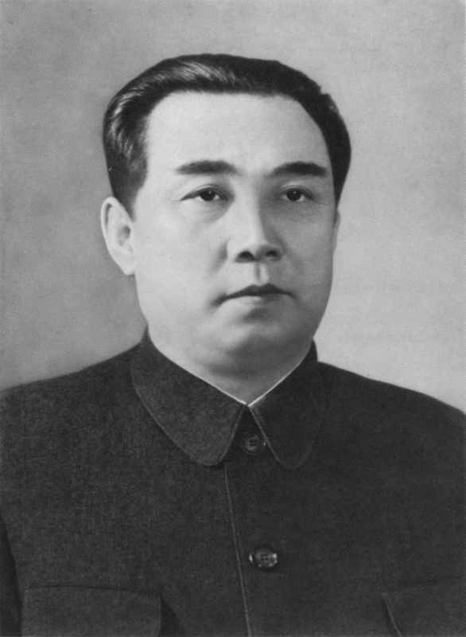
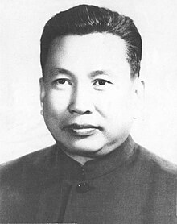
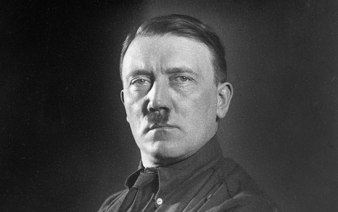
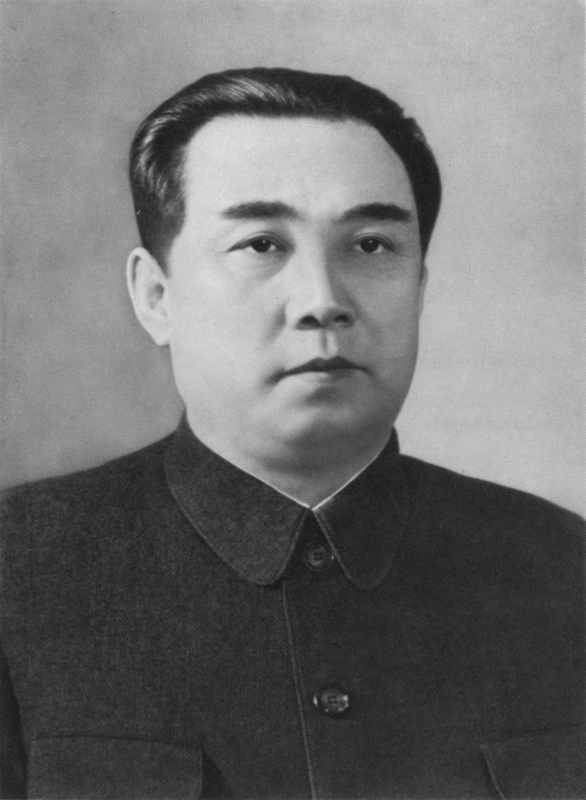
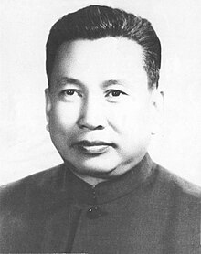
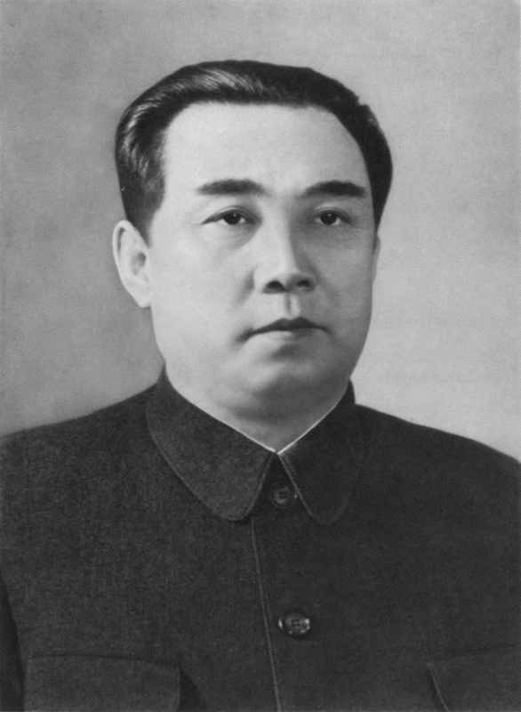
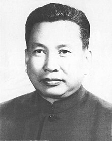
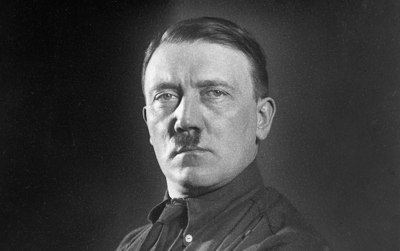
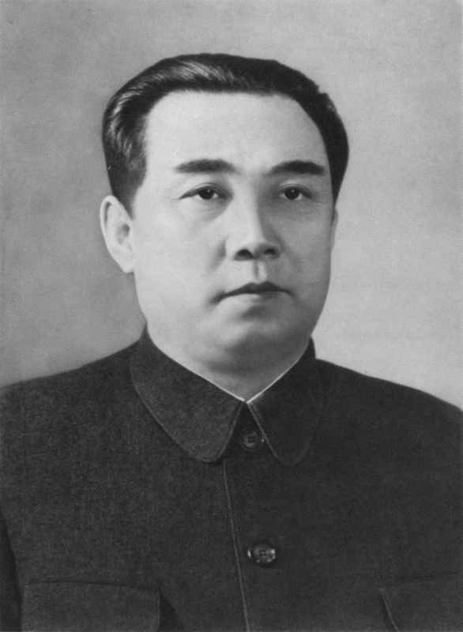
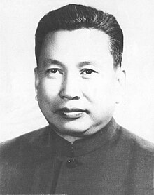
The leader of the Khmer Rouge, Pol Pot orchestrated the Cambodian Genocide, leading to the deaths of approximately 1.7 million people.
The Cambodian genocide was the systematic persecution and killing of Cambodian citizens by the Khmer Rouge under the leadership of the Communist Party of Kampuchea, General Secretary Pol Pot. It resulted in the deaths of 1.5 to 2 million people from 1975 to 1979, nearly a quarter of Cambodia's population in 1975 7.8 million.
Pol Pot and the Khmer Rouge had long been supported by the Chinese Communist Party (CCP) and its chairman, Mao Zedong; it is estimated that at least 90% of the foreign aid that the Khmer Rouge received came from China, including at least US$1 billion in interest-free economic and military aid in 1975 alone. After it seized power in April 1975, the Khmer Rouge wanted to turn the country into an agrarian socialist republic, founded on the policies of ultra-Maoism and influenced by the Cultural Revolution. Pol Pot and other Khmer Rouge officials met with Mao in Beijing in June 1975, receiving approval and advice, while high-ranking CCP officials such as Politburo Standing Committee member Zhang Chunqiao later visited Cambodia to offer help. To fulfill its goals, the Khmer Rouge emptied the cities and forced Cambodians to relocate to labor camps in the countryside, where mass executions, forced labor, physical abuse, malnutrition, and disease were rampant.
While not as widely recognized for casualties as some other leaders, Kim Il-sung's rule laid the groundwork for the oppressive regime in North Korea, contributing to significant human rights abuses and casualties.
Kim Il Sung was born and lived his early years on the 15 of April 1912 in the Mangyongdae neighborhood of Pyongyang in North Korea. This was during the time of Japan’s rule over Korea due to Japan’s absorption of Korea in 1910 after Japan defeated Russia in 1905.
During his teen years, he would become involved in many anti-Japanese activities, partly due to his parents being activists against Japanese rule over Korea. In the 1930s, he would later join other activities like Japanese guerrilla groups which would help fight for Korea’s independence. These activities and experiences would heavily influence political ideologies later in his life when he became a leader.
When World War 2 started, Kim Il Sung would operate as a significant figure against the Japanese. He would join, operate and lead different guerrilla groups and help resist the Japanese. He would also operate from bases in the Manchurian area of China and would strategically use the region’s terrain and geography as a stronghold for anti-Japanese activities. In 1945, it was the end of World War 2 and the Japanese empire was defeated. Korea was separated into two countries and with support from the Soviets. Kim Il Sung would emerge as a prominent political figure in North Korea and would become the leader of the Newly established Democratic People’s Republic of Korea a.k.a North Korea.
As a leader, He was associated with many controversial actions, an example would be the Korean War. An invasion of South Korea caused devastation and resulted in millions of deaths. Another would be his authoritarian regime which still carries over today with King Jong Un as it leads to restricting freedom, control over information and the highly centralized system of governance. Finally, His nuclear program has been a source of tension and concern around the world. This would also dictate the militarism of the country as well.
Overall, there isn’t an exact number of deaths due to his actions. Some estimate in the couple Hundred thousand while some estimate several millions. An approximation though would be 4 million from the Korean War, mass starvation due to economic struggles and other actions.
While credited with founding the People's Republic of China, Mao's policies like the Great Leap Forward and the Cultural Revolution which both caused widespread famines and economic disasters which together caused tens of millions of deaths.
The Great Leap Forward, initiated by Mao Zedong in 1958, stands as a pivotal but self-destructive chapter in the history of the People's Republic of China. It was an ambitious campaign that aimed at transforming China from an agrarian society into a socialist industrial society. However, the methods employed during this initiative resulted in widespread famine, economic turmoil, and the death of millions.
Central to the Great Leap Forward was the concept of collectivization. Mao sought to bring together agricultural labor by organizing "peasants" into large collective farms known as "People's Communes". Private farming was abolished, and resources were pooled together for communal use. However, this abrupt shift led to the collapse of traditional farming practices and the loss of individual incentives to work, causing a decline in agricultural productivity. This decline in agriculture thus contributed to the widespread famines and economic turmoil.
The campaign also emphasized the establishment of backyard steel furnaces and communal industrial enterprises. In this citizens were encouraged to produce steel in small-scale backyard furnaces to meet overly ambitious production targets set by the government. Unfortunately, these efforts resulted in the movement of essential resources and labour away from agriculture and crucial industries. Further contributing to the famine and economic turmoil. Secondly, the steel produced in these furnaces was of low quality and unsuitable for industrial use. The reason for this is that they were often only capable of producing pig iron –also known as crude iron.
Additionally, the government's imposition of exaggerated production quotas further compounded the issues. Local officials, fearing repercussions for failure, often resorted to reporting inflated or incorrect production figures. This thus misled central authorities and resulted in a disconnect between reported and actual production levels.
Communal living arrangements and massive public works projects were also part of the Great Leap Forward. While intended to showcase rapid progress, these endeavors were often poorly planned and executed. They diverted manpower and resources away from critical sectors, adding to the inefficiencies and accelerating the economic decline.
This all meant the consequences of the Great Leap Forward were catastrophic. The disruption of agricultural practices, inefficiencies produced in all sectors, and the diversion of resources toward unrealistic industrial targets led to a sharp decline in food production. This resulted in widespread famine, with millions of people across China starving and dying of related illnesses. On top of this the economic downturn also heavily contributed to an increase in deaths
The architect of the Holocaust and initiator of World War II, Hitler's actions led to the genocide of six million Jews and the deaths of millions more through warfare and persecution.
Adolf Hitler was born on April 20, 1889, In Austria. His rise to power would begin in 1919 when he joined the German Workers’ Party which would later become the Nazi party. Due to his skills and use of propaganda, he would become the leader. After a further presidential run and the death of Paul von Hindenburg, this would lead to Hitler securing the position of Fuhrer (leader). In 1933, the Nazis, (known as the German Reich by then) were led by Hitler and all together would control Germany. This would transform the country into a totalitarian dictatorship.
During his dictatorship, he decided to invade Poland in 1939. Since Poland was guaranteed to have military support from the British and French. 2 days after the invasion. The 2 countries would declare war on Germany, Sprouting World War 2.
During the war, Hitler would further do more damage by being the architect of the holocaust. A massive genocide against the Jews. Here, Jewish people were systematically tortured and murdered because Hitler blamed them for the loss and fall of Germany in the aftermath of World War 2. Hitler would continue this operation until his suicide in 1945 due to Germany losing the war.
Overall, Hitler caused the death of 6 million Jews, 5 million non-Jews and millions of others due to the effect of warfare and prosecutions. These effects were catastrophic.
Responsible for the deaths of millions through purges, forced labour camps, and man-made famines, Stalin's rule is estimated to have caused the highest death toll among leaders in history based on deaths caused by direct order and not general incompetence.
Born to a poor family in Gori in the Russian Empire (now Georgia), Stalin attended the Tbilisi Spiritual Seminary before joining the Marxist Russian Social Democratic Labour Party. He edited the party's newspaper, Pravda, and raised funds for Vladimir Lenin's Bolshevik faction via robberies, kidnappings and protection rackets. Repeatedly arrested, he underwent several internal exiles to Siberia. After the Bolsheviks seized power in the October Revolution and created a one-party state under the new Communist Party in 1917, Stalin joined its governing Politburo. Serving in the Russian Civil War before overseeing the Soviet Union's establishment in 1922, Stalin then assumed leadership over the country following Lenin's death in 1924. Now under Stalin, socialism in one country became a central principle of the party's ideology.
After this his Five-Year Plans (also known as the Five-Year Plans of The Soviet Union) were implemented, the country thus underwent agricultural collectivisation and rapid industrialisation, creating a centralized planned economy. Though this led to severe disruptions to food production and contributed to the famine of 1930–33, including the Asharshylyk in Kazakhstan and the Holodomor in Ukraine. Both of these, are recognised as an attempted genocide.
To eradicate accused "enemies of the working class", Stalin instituted the Great Purge, in which over a million were imprisoned, largely in the Gulag system of forced labour camps, and at least 700,000 were executed between 1934 and 1939. By 1937, he had absolute control over the party and government.